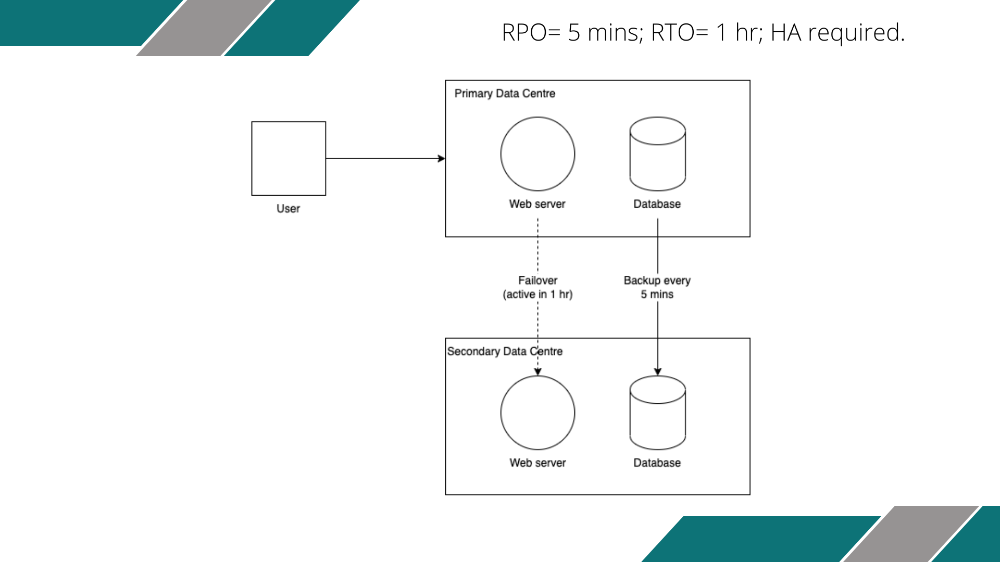

Artefacts
The artefacts I have created during the Module 5 (Information Security Management) of MSc Computer Science program.
Collaborative Discussion 1 (Initial Post): The Risks of Digitalisation (Unit 1):
Overview:
Instructions: Based on your reading of the case study listed above (Kovaitė & Stankevičienė, 2019) answer the following questions in the discussion forum:
- What do the authors mean by the term ‘Industry 4.0’ - give two examples.
- Give two real-world examples of risks that fit into the authors categories.
- Find another journal article that either supports or contradicts the points made in the cited study.
Here is my initial post:
Kovaitė and Stankevičienė (2019) asserts that Industry 4.0 is a step forward from Industry 3.0 and relies on the novel ways of interaction between humans and machines and it corporates lates technologies like Internet of Things (IoT), cloud computing or big data, among others. Without a doubt, cyber-physical systems play a central role in Industry 4.0. From my point of view, two most important examples of Industry 4.0 are:
- Smart factories (Colicchia et al., 2017) in which tasks like production, maintenance and quality control are carried out in novel ways, introducing unprecedented levels of efficiency.
- Cloud computing where the on-premises sources are outsourced to cloud service providers which provides businesses of different sizes a cost-effective (e.g., pay as you go model, lower cost of ownership, etc.) and more efficient (e.g., faster download times via CDNs, ability to scale up and out to meet increasing demand, etc.) ways to operate.
Two examples of risks that fit into the categories mentioned in the article:
- Cloud computing brings many advantages to businesses along with new challenges. While the businesses used to have complete control over their (on-prem) infrastructure in the past, now they have to follow a shared responsibility model in which the responsibility to secure the infrastructure is shared between the service provider and the business itself. AWS Shared Responsibility Model (AWS, N.D.) is a fitting example for this one. So, this requires a new type of competence. In my opinion, this example fits into technical risks and competence risks.
- Software as a Service (SaaS) is a great solution for users who want to start using a software solution right away without having to worry about maintaining the software. However, it comes with a downside for some of the users: In the past, it was possible to buy the software once and for all. Now, the users have to subscribe to the software, and which is not always an ideal choice. Take Microsoft’s Office suite for example: Even though it is still possible to buy a version of the software, Microsoft 365 (Microsoft, N.D.) subscription model provides always up-to-date version with additional benefits like cloud storage service. However, due to their reluctancy to change their habits and having to pay an annual fee, some customers tend to shy away from using Microsoft 365 and stick with an outdated version of the office suite and without the additional perks like cloud storage.
In their case study in which they studied the adoption of Industry 4.0 in Slovakia and Poland, Snieška et al. (2020) point out that level of awareness and perception of risks vary between the countries, but in general, Slovakia lags behind the many of the Western European countries due to negligence of Industry 4.0 for a long time, which affirms the competence and technical risks that are mentioned in the case study.
Note: Refer to the bottom of the page for references.
Seminar Preparation: Threat Modelling Exercises (Unit 2):
Overview:
Instructions: Read Shostack (2018) chapters 3 – 5 (that cover STRIDE and DREAD, Attack Trees and Attack libraries) and then create a threat model based on one of the following scenarios:
- A large international airport based in the United States of America.
- A large international bank based in the UK.
- A large nuclear power station in France.
You should use the Threat Modelling Manifesto, the OWASP Threat Modelling Cookbook and the ATT&CK libraries to inform your model design. Be prepared to share and discuss your designs at the seminar session this week.
My response:
I chose the "large international bank based in the UK" scenario for the exercise and started off by designing a simple data flow diagram:
Data flow diagram for a large international bank
Even though this diagram is a rudimentary one and can be developed further, I think it consists of the basic components including the entities, data flows and the trust boundaries.
Then, in the second step, I applied the STRIDE model to identify the potential threats to the bank:

The application of STRIDE model to identify potential threats
I used MITRE ATT&CK libraries as well as my own knowledge and experience to populate the table. I had the opportunity to present my work in the seminar and the tutor advised be to incorporate the DREAD model as well and also to include mitigations to the threats identified. The feedback made perfect sense to me, and I intend to continue developing this model when I have the opportunity.
E-Portfolio Exercise: Security Standards (Unit 3):
Overview:
Instructions: Review the following standards and answer the questions below: GDPR, PSI DSS, HIPAA.
- Which of the standards discussed in the sources above would apply to the organisation discussed in the assessment? For example, a company providing services to anyone living in Europe or a European-based company or public body would most likely be subject to GDPR. A company handling online payments would most likely need to meet PCI-DSS standards.
- Evaluate the company against the appropriate standards and decide how would you check if standards were being met?
- What would your recommendations be to meet those standards?
- What assumptions have you made?
My response:
I reviewed the shared links about GDPR, PCI DSS and HIPAA and answered the questions for the current state and the digitalized business as well.
Current state of business: In my opinion, GDPR applies to the current state of business to some extent, as customers are able to correspond with the business and I assume that the business is sending emails to customers time to time, to inform them about the status of their orders or about the new products in stock. So, it is important to comply with the GDPR requirements about the customer consent and data retention. Since the company doesn’t accept online payments, PCI DSS does not apply to it. The company doesn’t operate in the health insurance industry, therefore, HIPAA is not applicable to it.
Digitalised business: Since the company is providing services to its online clientele, GDPR applies to it. The digitalised business also relies on a e-commerce website to offer its products and collects online payments, PCI DSS is applicable too. For the same reasons outlined above, HIPAA is not applicable to the business.
Assignment 1: Risk Identification Report (Unit 3):
Overview:
Instructions:
Pampered Pets are a bricks-and-mortar business, based in a leafy suburb of Hashington-on-the-Water. It employs 4 staff; Alice the owner/ manager; Cathy the shop manager; Andrea the store assistant and Harry the warehouse manager. 90% of their business is carried out face to face, with people coming into the store to buy items. A small percentage of clients will email their orders – once these are ready the staff email the clients who then travel to the store to pick up goods and pay. Recently Harry has started to use an old, networked computer (with a spreadsheet package) to keep track of warehouse deliveries and item locations. The front desk uses a computer for all sales and purchases so that transactions are recorded digitally – this makes VAT and Tax submissions easier. The main shop has a wireless gateway and hub that both computers are connected to. In addition, all the staff use the wireless connection for various apps on their smart phones.
The business is most famous for the quality of its pet foods – using the highest quality ingredients from local suppliers, with many items being prepared and packed in-house. This has a number of advantages including easy and regular quality checks of ingredients and a guaranteed supply chain – if necessary, employees could get into their cars and drive 10 minutes to the suppliers (mostly local farms) to pick up the ingredients by hand.
Cathy, cognisant of the influence and benefits of the Internet, has retained the services of a consultancy (you) to research the best way to grow the business. The report should investigate all reasonable threats AND address the following three questions:
- Could an online presence grow the business by up to 50%?
- Could changing to an international supply chain reduce costs by up to 24%?
- Could the business lose up to 33% of its existing customers if the business doesn’t provide some online features?
Orla O’dour (eccentric Irish billionaire) decides to buy a share in the company and advises Cathy that the business should be digitalised to improve internal business processes and to expand the reach of the business internationally – and she is willing to fund the transformation.
My response:
Even though there are other business-oriented approaches like PASTA, because they are too complicated and the business in question is a simple one, I chose to adopt a custom 5-step approach in which I analysed the business objectives, drew the data flow diagram of the business, analysed the threats using STRIDE and DREAD and in the end, came up with mitigations and recommendations. I used MITRE ATT&CK library to enumerate the threats and mitigations so that it is aligned with business standards and when needed, one can refer to the library for detailed information. I carried out a risk assessment of both the current state and the digitalised business and also came up with some recommended steps for the digitalisation process of the business.
You can read my Risk Assessment Report here.
Seminar Preparation: DR Solutions Design and Review (Unit 4):
Activity 1: DR Terms and Concepts
Instructions:
Read Alhazmi & Malaiya (2013) and then answer the following questions:
- What is the difference between Hot Standby, Warm Standby and Cold Standby? Frame your answers in terms of availability, RPO and RTO.
- Does the technology deployed affect the options available? For example, can you create a high availability, hot standby solution between two on-premise data centres?
My response:
Hot, warm and cold standby are the classification of available disaster recovery options, in terms of recovery time objective (RTO) and recovery point objective (RPO). While there is no consensus about the values and it is subject to change according to the technology implemented, the approximate RTO and RPO values of each option are:
| DR Option | RTO | RPO | Availability |
|---|---|---|---|
| Hot standby | Few secs/mins | 0-10 mins | High |
| Warm standby | 12-24 hrs | 5 min-24 hrs | Medium |
| Cold standby | 1-7 days | 2-24 hrs | Low |
The technology deployed has a direct impact on the available DR options. Even though, hypothetically, it is somewhat possible to create any solution in any technological setting, costs will be very different. For example, in case of two on-premise data centers, in order to create a highly available hot standby solution, the backup data center might have to be up and running alongside the primary data center. This would increase (maybe double) the costs and might not be logical due to the low frequency of disaster occurrence and budgetary constraints. So, one has to be aware of the tradeoffs between the DR options and the technological infrastructure that would be implemented.
Activity 2: DR Solutions Design
Instructions:
Read Opara-Martins et al. (2014) and Morrow et al. (2021) and answer the following questions:
- What are some of the main vendor lock-in issues the authors identify? How would you mitigate them?
- What are some of the security concerns with the modern cloud? How can these be mitigated?
My response:
Some of the main lock-in issues identified by the authors are:
- Lack of interoperability between the different platforms
- Lack of portability (especially that of data)
- Lack of global standards
- Technical barriers that lead to integration problems or that impede companies from moving their data to another platform or back to company premises
- Legal issues arising from data being hosted in certain jurisdictions
The most important mitigation to the issues is to carry out a detailed research (due diligence) before signing a contract with a cloud service provider (CSP). Especially, the exit clause which will enable the company to get all its data back to its on-premises data store or migrate to another CSP if needed. Legal issues stemming from hosting data in some other countries, can be mitigated by the ability to select the region where the data will be hosted, which is offered by some CSPs. Moreover, complying with the open standards and developing portable apps would reduce the impact of vendor lock-in. However, it is clear that the regulatory bodies and CSPs should come together to standardize the cloud services.
Some of the security concerns with the modern cloud (and possible mitigations) include:
- Compromised credentials: Since management interfaces of cloud services are accessible from the internet, attackers try to gain access to organization’s information systems by compromising user credentials. Especially, the credentials of the privileged users are a high-value target for the attackers. To mitigate this concern, MFA should be imposed and IAM accounts should be created for daily tasks instead and using root accounts should be avoided as much as possible.
- Unsecured data/services: Unsecured data at rest or in transit or unsecured cloud services are an important security concern. In order to mitigate this, first and foremost, the consumers should understand the shared responsibility model and developers/administrators should be aware of the security features that the cloud platform offers as these can usually be CSP-specific.
- Improper authorization: In order to reduce the attack surface, access rights of each user should be properly defined so that no user should be able to adversely affect the entire cloud. Access right should be limited as much as possible and when creating roles, principle of least privilege should be applied. Bastion hosts may be used to further control the privileged user access to operating systems and apps.
- Compromised keys: Compromised keys may lead to encrypted data being exposed to the attackers. To prevent this from happening, a key management service (KMS) should be used. Each CSP provide a default KMS, however, customers can manage the keys themselves too. If the latter option is preferred, the keys should never be stored in the cloud.
- Loss of critical data: Despite the guarantees that persistent data will not be lost, there may still be some cases which the CSPs lose the customer data. Likewise, customers can make some mistakes that result in a data loss. In order to avoid losing critical data, the data backup and recovery processes of CSPs should be well understood and proper backup and recovery options should ve configured.
- Disclosure of deleted data: Even though a data could have been deleted by the customer or a service is decommissioned, the deleted data can still be stored somewhere in cloud infrastructure (e.g., CDNs, logging and monitoring services, backups, etc.). Therefore, it is important to analyze where and how the data is spread across the cloud infrastructure and ways to delete them.
Activity 3: DR Solutions Design and Review
Instructions:
Create a high-level diagram of a DR solution for each of the following requirements. They should be created in PowerPoint, and you should include a basic description of each design.
- RPO= 1 hr; RTO= 8 hrs; high availability (HA) required.
- RPO= 24 hrs; RTO = 72 hrs; HA NOT required.
- RPO= 5 mins; RTO= 1 hr; HA required.
My response:
DR solution for the first setup (RPO= 1 hr, RTO= 8 hrs, HA req.)
DR solution for the second setup (RPO= 24 hrs, RTO= 72 hrs, HA not req.)

DR solution for the third setup (RPO= 5 mins, RTO= 1 hr, HA req.)
Seminar Preparation: Topic: The Great Debate – The Future of SRM (Unit 6):
Instructions:
Each team will choose a trend that they think will be the most influential in the next 5 years and will prepare a 10-minute presentation on that trend that summaries the key points and argues why they believe it will be the most influential in the next 5 years. Each team will be given a slot in this week's seminar where they will be able to present their slides and their arguments. Following the presentations all attendees will be given a chance to ask questions and discuss their own views. At the end of the discussion the tutor will run a poll and all attendees will be given the chance to vote for their favourite.
My response:
I think that the most important trend in the future of SRM is Machine Learning (ML). I elaborated on the subject within the context of military technologies and autnomous weapons.
You can check out my presentation here.
Assignment 2: Risk Identification Report (Unit 6):
Overview:
Instructions:
Cathy is not convinced by your report and has asked you to create a python application that allows her to both visualise the attack tree/ graph AND to add values to the nodes which the application will aggregate to form an overall value impact to the business of any of the threats identified. This serves as an unconventional executive summary for the company.
Requirements:
- Create a Python Application that can accept an attack tree specification (in an industry-standard format such as XML, YAML, or JSON) and produce a graphical representation of the attack tree.
- The user should be able to add values (as monetary amounts or probabilities) to the leaf nodes.
- The application should be able to aggregate these values into an overall threat assessment rating – that may be a monetary value or a probability of attack success.
- Use your application to demonstrate the threat model of both the original system (pre-digitalisation) and the system after your recommended digitalisation steps have been applied.
My response:
I have created a CLI-based Python application which offers the following features:
- Load a .json file to memory
- Generate a CLI-based attack tree
- Enter/modify values for leaves
- Calculate the overall risk rating of the system
- Visualise the attack tree and export it as a .png file
Here is the source code of my Attack Tree Generator application. Please check out the readme file for detailed information about its usage.
I have also created an executive summary for the business, which contains the attack trees for both scenarios (before and after digitalisation), comparison and discussion about the methodology adopted. You can read the executive summary here.
Assignment 3: Reflective Piece (Unit 6):
Overview:
Instructions:
Write an 800-word reflective piece which includes components of the reflections that you have captured throughout the module.
My response:
Just like I did in the previous units, I used the "What-So What-Now What?" model suggested by Rolfe et al. (2001) to reflect on my learning process throughout the module.
You read my reflections on the Reflections page (at the top of the page).
References:
Alhazmi, O. H., & Malaiya, Y. K. 'Evaluating disaster recovery plans using the cloud' 2013 Proceedings Annual Reliability and Maintainability Symposium (RAMS). New York: IEEE. 1-6. DOI: 10.1109/RAMS.2013.6517700
Amazon Web Services (N.D.) Shared Responsibility Model. Available from: https://aws.amazon.com/compliance/shared-responsibility-model/ [Accessed 7 March 2023]
Colicchia, C., Creazza, A. & Noé, C. (2017) Literature review on the ‘Smart Factory’ concept using bibliometric tools. International Journal of Production Research 55(22): 6572-6591. DOI: https://doi-org.uniessexlib.idm.oclc.org/10.1080/00207543.2017.1326643
Data Protection Commission (2020) Case Studies. Available from: https://www.dataprotection.ie/en/pre-gdpr/case-studies#201801 [Accessed 31 March 2023].
ICO (N.D.) Electronic mail marketing. Available from: https://ico.org.uk/for-organisations/guide-to-pecr/electronic-and-telephone-marketing/electronic-mail-marketing/ [Accessed 31 March 2023].
Kovaite, K. & Stankeviciene, J. (2019) ‘Risks of Digitalisation of Business Models’ Contemporary Issues In Business, Management And Economics Engineering’2019. Vilnius Gediminas Technical University, Vilnius, 9-10 May. Vilnius: Vilnius Gediminas Technical University. 380-387. DOI: https://doi.org/10.3846/cibmee.2019.039
Microsoft (N.D.) What is Microsoft 365? Available from: https://support.microsoft.com/en-us/office/what-is-microsoft-365-847caf12-2589-452c-8aca-1c009797678b [Accessed 7 March 2023].
Morrow, T., LaPiana, V., Faatz, D., Hueca, A. & Richmond, N. (2021) Cloud Security Best Practices Derived from Mission Thread Analysis. Pittsburgh: Software Engineering Institute, Carnegie Mellon University.
Opara-Martins, J., Sahandi, R. & Tian, F. 'Critical review of vendor lock-in and its impact on adoption of cloud computing' International Conference on Information Society (i-Society 2014). London Heathrow Marriott Hotel, London, 10-12 November. New York: Infonomics Society. 92-97. DOI: 10.1109/i-Society.2014.7009018
Rolfe G., Freshwater D. & Jasper M. (2001) Critical reflection for nursing and the helping professions : A user's guide. Basingstoke: Palgrave.
Shostack, A. (2014) Threat Modeling: Design for Security. Indianapolis: John Wiley & Sons.
Snieška, V., Navickas, V., Havierniková, K., Okręglicka, M., & Gajda, W. (2020) Technical, information and innovation risks of industry 4.0 in small and medium-sized enterprises – case of Slovakia and Poland. Journal of Business Economics and Management 21(5): 1269-1284. DOI: https://doi.org/10.3846/jbem.2020.12279